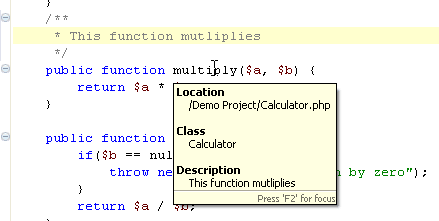
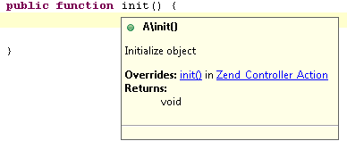
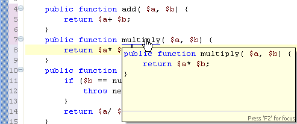

Hovering over an element will cause a tooltip to appear with information about that element, containing the location of its declaration and any additional information (description, parameters, etc.) contained in the element's relevant PHPdoc comment:

Hover information also includes other information such as overrides and returns for methods, types, and other elements:

Holding down Ctrl while hovering over an element will also show you everything contained within that element:

When hovering, press F2 for the Hover tooltip to come into focus. This ensures that it is displayed even when not hovering and enables you to select the text from within it.
Clicking on an element while hovering will take you to that element's declaration. See Using Smart Goto Source for more information.
To configure your hover settings, go to the Hover Preferences page, accessible by going to Window | Preferences | PHP | Editor | Hovers.